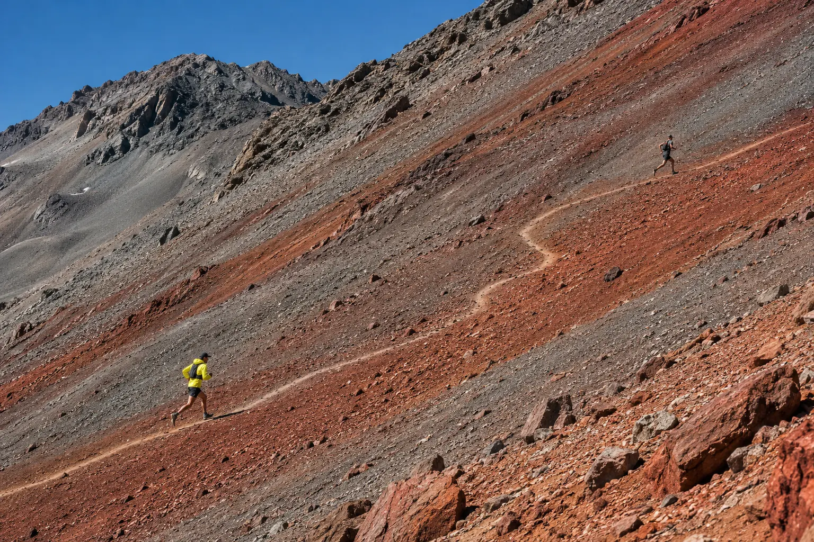

Trail running
The looseway up
An imagined mountain race across shifting stone, a high saddle and an exposed descent.
Read the terrain
Trace the climb
Select a segment to follow its elevation profile. Distances and elevations are illustrative.
720 m to 1,060 m
A hard-packed trail climbs away from the valley before the first boulder field.